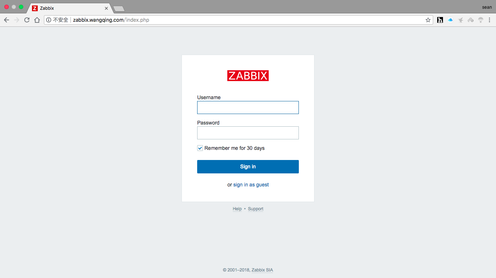

监控服务zabbix部署
1. zabbix介绍
zabbix是一个基于WEB界面的提供分布式系统监视以及网络监视功能的企业级的开源解决方案。
zabbix能监视各种网络参数，保证服务器系统的安全运营；并提供灵活的通知机制以让系统管理员快速定位/解决存在的各种问题。
zabbix由2部分构成，zabbix server与可选组件zabbix agent。
zabbix server可以通过SNMP，zabbix agent，ping，端口监视等方法提供对远程服务器/网络状态的监视，数据收集等功能，它可以运行在Linux，Ubuntu，Solaris，HP-UX，AIX，Free BSD，Open BSD，OS X等平台上。
zabbix agent需要安装在被监视的目标服务器上，它主要完成对硬件信息或与操作系统有关的内存，CPU等信息的收集。
zabbix server可以单独监视远程服务器的服务状态；同时也可以与zabbix agent配合，可以轮询zabbix agent主动接收监视数据（agent方式），同时还可被动接收zabbix agent发送的数据（trapping方式）。
另外zabbix server还支持SNMP (v1,v2)，可以与SNMP软件(例如：net-snmp)等配合使用。
2. zabbix特点
zabbix的主要特点：
- 安装与配置简单，学习成本低
- 支持多语言（包括中文）
- 免费开源
- 自动发现服务器与网络设备
- 分布式监视以及WEB集中管理功能
- 可以无agent监视
- 用户安全认证和柔软的授权方式
- 通过WEB界面设置或查看监视结果
- email等通知功能
Zabbix主要功能：
- CPU负荷
- 内存使用
- 磁盘使用
- 网络状况
- 端口监视
- 日志监视
3. zabbix配置文件
zabbix配置文件有两种：
- 服务器端配置文件(/usr/local/etc/zabbix_server.conf)
- 客户端配置文件(/usr/local/etc/zabbix_agentd.conf)
- zabbix代理配置文件(/usr/local/etc/zabbix_proxy.conf)
服务器端配置文件zabbix_server.conf常用配置参数：
| 参数 | 作用 |
|---|---|
| LogFile | 设置服务端日志文件存放路径 |
| ListenIP | 设置服务端监听IP |
| ListenPort | 设置服务端监听的端口号 |
| PidFile | 设置服务端进程号文件存放路径 |
| DBHost | 指定zabbix的数据库服务器IP |
| DBName | 指定zabbix使用的数据库库名 |
| DBUser | 指定zabbix数据库登录用户 |
| DBPassword | 指定zabbix数据库登录密码 |
| DBPort | 指定zabbix数据库端口号 |
| User | 设置zabbix以什么用户的身份运行 |
| AlertScriptsPath | 设置告警脚本存放路径 |
| ExternalScripts | 外部脚本存放路径 |
客户端配置文件zabbix_agentd.conf常用配置参数：
| 参数 | 作用 |
|---|---|
| Server | 指定zabbix服务器的IP或域名 |
| ServerActive | 指定zabbix服务器的IP或域名 |
| Hostname | 指定本机的主机名，此项必须与web界面配置项一致 |
| UnsafeUserParameters | 是否启用自定义监控项，可选值为{1 | 0} |
| UserParameter | 指定自定义监控脚本参数 |
| LogFile | 设置客户端日志文件存放路径 |
4. 部署zabbix
环境说明：
| 环境 | IP | 要安装的应用 |
|---|---|---|
| 服务器 | 172.16.12.128 | lamp架构 zabbix server zabbix agent |
| 客户端 | 172.16.12.129 | zabbix agent |
因为zabbix是用php语言开发的，所以必须先部署lamp架构，使其能够支持运行php网页
4.1 zabbix服务端安装
//安装依赖包
[root@localhost ~]# yum -y install net-snmp-devel libevent-devel
安装过程略....
//下载zabbix
[root@localhost ~]# cd /usr/src/
[root@localhost src]# wget https://nchc.dl.sourceforge.net/project/zabbix/ZABBIX%20Latest%20Stable/4.0.3/zabbix-4.0.3.tar.gz
下载过程略....
//解压
[root@localhost src]# tar xf zabbix-4.0.3.tar.gz
//创建zabbix用户和组
[root@localhost ~]# groupadd -r zabbix
[root@localhost ~]# useradd -r -g zabbix -M -s /sbin/nologin zabbix
//配置zabbix数据库
[root@localhost mysql]# mysql -uroot -p
Enter password:
Welcome to the MySQL monitor. Commands end with ; or \g.
Your MySQL connection id is 2
Server version: 5.7.22 MySQL Community Server (GPL)
Copyright (c) 2000, 2018, Oracle and/or its affiliates. All rights reserved.
Oracle is a registered trademark of Oracle Corporation and/or its
affiliates. Other names may be trademarks of their respective
owners.
Type 'help;' or '\h' for help. Type '\c' to clear the current input statement.
mysql> create database zabbix character set utf8 collate utf8_bin;
Query OK, 1 row affected (0.00 sec)
mysql> grant all privileges on zabbix.* to zabbix@localhost identified by 'zabbix123!';
Query OK, 0 rows affected, 2 warnings (0.29 sec)
mysql> flush privileges;
Query OK, 0 rows affected (0.01 sec)
mysql> quit
Bye
[root@localhost ~]# cd /usr/src/zabbix-4.0.3/database/mysql/
[root@localhost mysql]# ls
data.sql images.sql schema.sql
[root@localhost mysql]# mysql -uzabbix -pzabbix123! zabbix < schema.sql
mysql: [Warning] Using a password on the command line interface can be insecure.
[root@localhost mysql]# mysql -uzabbix -pzabbix123! zabbix < images.sql
mysql: [Warning] Using a password on the command line interface can be insecure.
[root@localhost mysql]# mysql -uzabbix -pzabbix123! zabbix < data.sql
mysql: [Warning] Using a password on the command line interface can be insecure.
//编译安装zabbix
[root@localhost ~]# cd /usr/src/zabbix-4.0.3
[root@localhost zabbix-4.0.3]# ./configure --enable-server \
--enable-agent \
--with-mysql \
--with-net-snmp \
--with-libcurl \
--with-libxml2
[root@localhost zabbix-4.0.3]# make install
4.2 zabbix服务端配置
[root@localhost ~]# ls /usr/local/etc/
zabbix_agentd.conf zabbix_agentd.conf.d zabbix_server.conf zabbix_server.conf.d
//修改服务端配置文件
//设置数据库信息
[root@localhost ~]# vim /usr/local/etc/zabbix_server.conf
....
DBPassword=zabbix123! //设置zabbix数据库连接密码
//启动zabbix_server和zabbix_agentd
[root@localhost ~]# zabbix_server
[root@localhost ~]# zabbix_agentd
[root@localhost ~]# ss -antl
State Recv-Q Send-Q Local Address:Port Peer Address:Port
LISTEN 0 128 *:22 *:*
LISTEN 0 100 127.0.0.1:25 *:*
LISTEN 0 128 *:10050 *:*
LISTEN 0 128 *:10051 *:*
LISTEN 0 128 127.0.0.1:9000 *:*
LISTEN 0 128 :::80 :::*
LISTEN 0 128 :::22 :::*
LISTEN 0 100 ::1:25 :::*
LISTEN 0 80 :::3306 :::*
4.3 zabbix服务端web界面安装与配置
4.3.1 zabbix web界面安装前配置
//修改/etc/php.ini的配置并重启php-fpm
[root@localhost ~]# sed -ri 's/(post_max_size =).*/\1 16M/g' /etc/php.ini
[root@localhost ~]# sed -ri 's/(max_execution_time =).*/\1 300/g' /etc/php.ini
[root@localhost ~]# sed -ri 's/(max_input_time =).*/\1 300/g' /etc/php.ini
[root@localhost ~]# sed -i '/;date.timezone/a date.timezone = Asia/Shanghai' /etc/php.ini
[root@localhost ~]# service php-fpm restart
Gracefully shutting down php-fpm . done
Starting php-fpm done
[root@localhost ~]# cd /usr/src/zabbix-4.0.3
[root@localhost zabbix-4.0.3]# ls
aclocal.m4 ChangeLog config.log configure.ac frontends m4 man README
AUTHORS compile config.status COPYING include Makefile misc sass
bin conf config.sub database INSTALL Makefile.am missing src
build config.guess configure depcomp install-sh Makefile.in NEWS upgrades
[root@localhost zabbix-4.0.3]# mkdir /usr/local/apache/htdocs/zabbix
[root@localhost zabbix-4.0.3]# cp -a frontends/php/* /usr/local/apache/htdocs/zabbix/
[root@localhost zabbix-4.0.3]# chown -R apache.apache /usr/local/apache/htdocs
//配置apache虚拟主机
[root@localhost ~]# vim /etc/httpd24/httpd.conf
//在配置文件的末尾加如下内容
<VirtualHost *:80>
DocumentRoot "/usr/local/apache/htdocs/zabbix"
ServerName zabbix.wangqing.com
ProxyRequests Off
ProxyPassMatch ^/(.*\.php)$ fcgi://127.0.0.1:9000/usr/local/apache/htdocs/zabbix/$1
<Directory "/usr/local/apache/htdocs/zabbix">
Options none
AllowOverride none
Require all granted
</Directory>
</VirtualHost>
//设置zabbix/conf目录的权限，让zabbix有权限生成配置文件zabbix.conf.php
[root@localhost ~]# chmod 777 /usr/local/apache/htdocs/zabbix/conf
[root@localhost ~]# ll -d /usr/local/apache/htdocs/zabbix/conf
drwxrwxrwx 2 apache apache 81 Aug 17 13:03 /usr/local/apache/htdocs/zabbix/conf
//重启apache
[root@localhost ~]# apachectl -t
Syntax OK
[root@localhost ~]# apachectl stop
[root@localhost ~]# apachectl start
[root@localhost ~]# ss -antl
State Recv-Q Send-Q Local Address:Port Peer Address:Port
LISTEN 0 128 *:22 *:*
LISTEN 0 100 127.0.0.1:25 *:*
LISTEN 0 128 *:10050 *:*
LISTEN 0 128 *:10051 *:*
LISTEN 0 128 127.0.0.1:9000 *:*
LISTEN 0 128 :::80 :::*
LISTEN 0 128 :::22 :::*
LISTEN 0 100 ::1:25 :::*
LISTEN 0 80 :::3306 :::*
4.3.2 安装zabbix web界面
- 修改/etc/hosts文件，添加域名与IP的映射
- 在浏览器上访问域名，本文设置的域名为zabbix.wangqing.com，你需要修改成你自己的域名
- 恢复zabbix/conf目录的权限为755
➜ ~ sudo vim /etc/hosts
Password:
➜ ~ cat /etc/hosts
127.0.0.1 localhost
255.255.255.255 broadcasthost
::1 localhost
172.16.12.128 zabbix.wangqing.com
在浏览器上访问域名进行安装：


恢复zabbix/conf目录的权限为755：
[root@localhost ~]# chmod 755 /usr/local/apache/htdocs/zabbix/conf
[root@localhost ~]# ll -d /usr/local/apache/htdocs/zabbix/conf
drwxr-xr-x 2 apache apache 104 Aug 17 13:05 /usr/local/apache/htdocs/zabbix/conf
4.4 登录zabbix
zabbix默认登录用户名和密码：
| 用户名 | 密码 |
|---|---|
| Admin | zabbix |
作业
1.部署zabbix服务
2.写博客